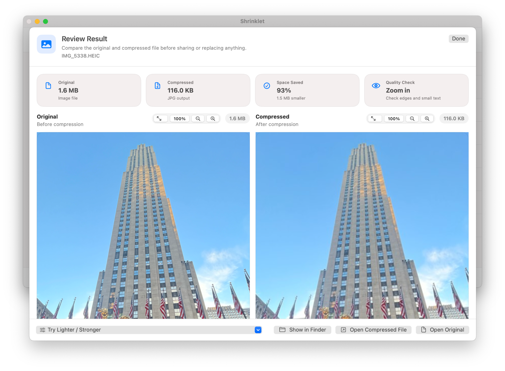

Compress common image formats
Work with JPG, PNG, HEIC, TIFF, GIF, WebP, and other macOS-readable image files.
Compress locally on macOS, keep the workflow understandable, and use one polished app for PDFs, images, videos, and audio instead of juggling multiple tools.

A focused Mac compressor should be fast to understand, private by design, and clear about results.
Work with JPG, PNG, HEIC, TIFF, GIF, WebP, and other macOS-readable image files.
Drop one image, many images, or a folder and process everything in one clean queue.
Review compressed images and zoom in to inspect detail before sharing results.
Shrinklet is designed for Mac users who need smaller files for email, uploads, client delivery, storage cleanup, school portals, workplace systems, and everyday sharing. It keeps compression local, offers simple presets, and makes before-and-after savings easy to understand.
Yes. Shrinklet supports common image formats such as JPG and PNG, along with HEIC, TIFF, GIF, WebP, and more.
Yes. Shrinklet is designed for local Mac workflows.
Yes. Add multiple images or a folder and compress them together.
For now, download Shrinklet from the Mac App Store to compress files privately on your Mac.